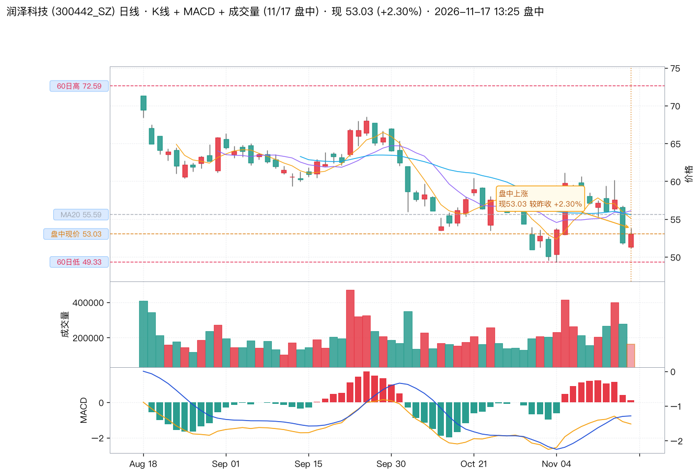
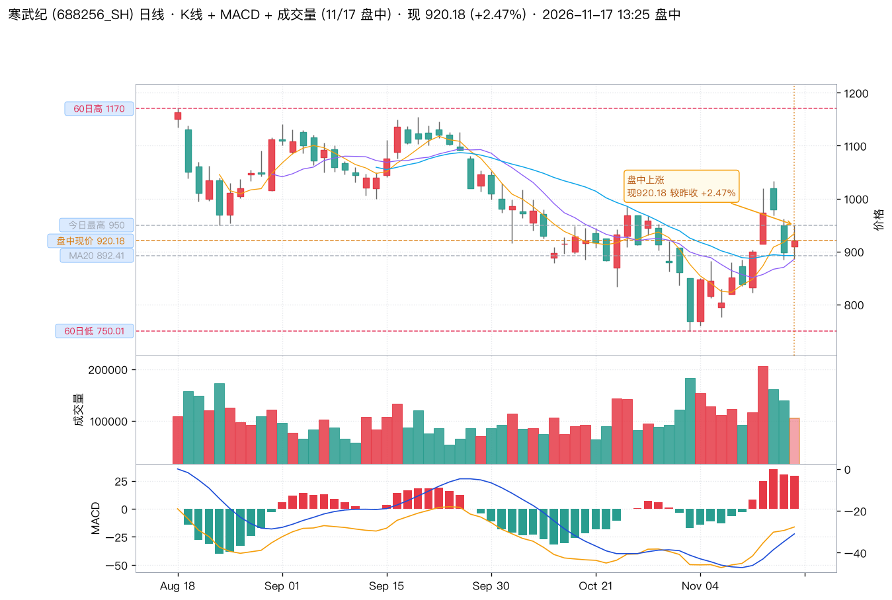

📈 wu2198 - 2026-11-17（周二 探低回升，主线未成）
🟡 「探低之后的抵抗」成立，但「没有大的力量」也是真的 —— 情绪修复，主线没成。 10:47 定性「科技类股杀估值去杠杆，洗干净之后，高成长+行业向好的科技股会走出局部行情」； 11:14 重申「有技术的可以 C3 开始布局，稳健的是 C5 完成之后干」； 11:15「早盘还只是探低之后的抵抗」；13:02/13:13「还没有明朗的热点效应」「暂时没有出现大的力量」。 可做的只有一条：算力租赁（她 11/16 唯一催化方向）8/8 全涨兑现；银行昨天一日游，今天退潮。
一、博主说了什么（8 条）
| 时间 | 信号 | 原文 | 判读 / 日线实测 |
|---|---|---|---|
| 06:07 | ⚪ 外盘 | 昨晚美股下跌：道指跌739点、纳指跌626点、标普跌145点 | 三个数字分毫不差：11/16 实测 −739.38 / −626.51 / −145.08（纳指 −2.49% 最重）。 |
| 09:31 | ⚪ 情绪 | 我不投降！ | 隔夜纳指 −2.49% 之后的情绪表态，无操作信息。 |
| 10:47 / 11:05 | 🟢🟢 方向 | 科技类股杀估值去杠杆，清洗干净之后，高成长+行业向好的科技股会走出局部行情。明白666 | 本期核心定性：把 11/16 科技崩盘解释成「杀估值去杠杆」，不是「逻辑破坏」。 实测涨停池集中在电子化学 3 / 光学光电 3 / IT服务 3，大涨榜伟测科技 +20%、华虹宏力 +11.33%、影石创新 +14.96% → 「局部行情」成立。 |
| 11:14 | 🟡 操作框架 | 有技术的可以 C3 开始布局，稳健的是 C5 完成之后干 | 重申 11/13 口径，门槛一个字没松：双门槛 3706 / 2626 仍未提（沪指今差 110.44 点、创业板差 318.51 点）。 |
| 11:15 | 🟡 盘面定性 | 暂时看，早盘还只是探低之后的抵抗！ | 实测成立：早盘创业板破 11/16 新低至 2284.56、上证破 60 日低 3574.27 至 3565.59，午后双双拉回至基本平盘。 |
| 11:27 / 11:31 | ⚪ 情绪 | 我不会鼓动大家，接下来聊风月吧！／早盘不用点评，中午加菜，吃肉！ | 11:31 互动 1.03 万为当日第一，但是情绪帖不是操作帖；「不会鼓动大家」= 今天不给方向。 |
| 13:02 | 🟡 热点 | 暂时还没有明朗的热点效应！ | 实测涨停 55 只分散在 6 个以上行业、无连板主线（东财涨停池 45 只、炸板 8 只）→ 口径自洽。 |
| 13:13 | 🟡 资金 | 暂时没有出现大的力量！ | 成交额同时点同比 -0.2%（-21 亿）→ 放量有限，没有增量资金。 |
二、大盘关键点位
上证指数 · 3595.56（-0.19%）

开 3585.67 / 高 3602.07 / 低 3565.59 / 现 3595.56。 早盘跌破 60 日低 3574.27 后拉回，现价距 60 日低仅 21.29 点（0.60%）； 3706 差 110.44 点（2.98%），MA20 3655.21 仍失守。
创业板指 · 2307.49（-0.54%）

开 2299.97 / 高 2343.15 / 低 2284.56 / 现 2307.49。 早盘跌穿 11/16 新低 2308.90 至 2284.56，午后较日低拉回 22.93 点，但仍低于 11/16 新低 1.41 点、尚未收复； 2626 差 318.51 点（12.13%），MA20 2511.16 远在头顶。
三、最值得关注的 3 个板块
| 板块 | 11/17 盘中实测（13:25） | 博主口径 / 打法 |
|---|---|---|
| ① 算力租赁 / IDC 首选 · 催化兑现 |
池 8 只 8 涨 0 跌，均值 +1.58%，额 21 亿 润泽科技 +2.30%、数据港 +1.92%、城地香江 +1.74% |
11/16 12:53 唯一催化（#DeepSeek因算力不足限额#）—— 今天 8/8 全涨，兑现。 但龙头润泽 53.03 仍在 MA20 55.59 之下（差 4.8%）→ 等站回 MA20，不追反抽。 |
| ② 存储 / 半导体 / GPU 次选 · 内部分化极大 |
池 8 只均值 -0.62%（4 涨 4 跌），额 284 亿 寒武纪 +2.47%、德明利 +1.51% / 海光信息 -2.62%、澜起科技 -5.67% |
正对应她 10:47 的「高成长+行业向好的科技股走出局部行情」。只做龙头：寒武纪站上 MA5/MA10/MA20（892.41），回踩不破可分；不碰分化掉的跟风股。 |
| ③ 军工 观察 · 补涨 |
池 12 只均值 +0.38%（6 涨 4 跌），额 46 亿 中航光电 +3.19%、光启技术 +1.27% / 中国船舶 -1.58% |
她 11/16 13:55「军工有五六只冲板」收盘没兑现，今天补上。只做池内领涨：中航光电 34.30 站上 MA5/MA10/MA20（34.13 / 33.39），回踩 MA10 可分。 |
四、3 支个股
| 代码 名称 | 现价 | 涨跌 | 成交额 | 关键位 | 实测印证 / 动作 |
|---|---|---|---|---|---|
| 300442 润泽科技 | 53.03 | +2.30% | 8.5 亿 | MA20 55.59 · 60 日低 49.33 | 11/16 跌停后反抽 +2.30%，算力租赁池 8/8 全涨 —— 她唯一催化方向的兑现标志。 但 MA20 55.59 未收复，60 日低 49.33 只差 7.0%。站回 MA20 才买，不追反抽。 |
| 688256 寒武纪 | 920.18 | +2.47% | 96.5 亿 | MA20 892.41 · 60 日高 1170.00 | 存储/GPU 池领涨，站上 MA5/MA10/MA20 三线；高 950.00 回落、量能 97 亿为池内最大。 符合她「高成长」口径。回踩 MA20 892.41 不破可分批；PE 偏高，不追高。 |
| 002179 中航光电 | 34.30 | +3.19% | 5.0 亿 | MA10 34.13 · 60 日高 36.25 | 军工池领涨且站上全部均线（MA5 33.82 / MA10 34.13 / MA20 33.39）， 60 日高 36.25 距今 1.95 点。回踩 MA10 可分，冲高不追。 |
润泽科技（300442）· 53.03（+2.30%）

高 53.80 / 低 51.18 / 现 53.03，11/16 跌停后反抽； MA5 55.10、MA20 55.59 压在头上，60 日低 49.33 在下方。
寒武纪（688256）· 920.18（+2.47%）

高 950.00 / 低 886.00 / 现 920.18，站上 MA20 892.41； 60 日高 1170.00 在左上（距今 27.1%）。
中航光电（002179）· 34.30（+3.19%）

高 34.41 / 低 32.95 / 现 34.30，站上 MA10/MA20； 60 日高 36.25、60 日低 30.97 在两端。
五、今天下午 + 明日盯什么（5 条）
- 创业板 2284.56 不破 —— 今日最低已破 11/16 新低，破了则 2200 成下一目标。
- 跌停家数守在 50 家以内 —— 已从 174 降到 40 家，情绪修复但没增量。
- 润泽科技站回 MA20 55.59 —— 她 11/16 唯一催化是否真兑现，就看这一根。
- 银行池不能继续绿 —— 昨天 +1.97% 唯一避险，今天 -0.22；银行翻绿 = 避险逻辑破产。
- 博主是否给出新门槛或买点 —— 11/16 全天未给、今天也没给；她不给之前只按「C3 分批、不追高、控仓」执行。
六、偏差记录
| 项 | 博主口径 / 昨日结论 | 实测 / 处理 |
|---|---|---|
| 11:15 盘面定性 核验通过 | 早盘还只是探低之后的抵抗 | 创业板破新低至 2284.56、上证破 60 日低至 3565.59，午后双双拉回至基本平盘 → 「探低 + 抵抗」成立。 |
| 06:07 外盘 核验通过 | 道指跌739点、纳指跌626点、标普跌145点 | 11/16 实测 −739.38 / −626.51 / −145.08，分毫不差（外盘播报继续全中）。 |
| 11/16 结论「银行/红利首选」 一日游被证伪 | （11/16 14:39 银行是唯一没受影响的板块，池 +1.97%） | 今日银行池 -0.22%、9 跌 1 涨。避险资金一日游，不能当主线。 |
| 11/16 结论「算力租赁=观察位」 提前兑现 | 等龙头站回 MA20 55.59 再谈 | 今日池 8/8 全涨 +1.58%，但润泽 53.03 仍未站回 MA20 → 提前兑现但关键位未过，继续观察。 |
| 双门槛 3706 / 2626 继续搁置 | 11/16 全天未提，11/17 也未提（11:14 只重申 C3/C5 框架） | 沪指距 3706 差 110.44 点、创业板距 2626 差 318.51 点。 门槛没松，她只是把表达从「等收复」换成「C3 分批 / C5 干」。 |
免责声明：本报告为公开微博内容整理与技术面统计，不构成投资建议； 「3 板块 + 3 个股」是博主观点 + 实测强度的归纳，不代表推荐。股市有风险，投资需谨慎。
盘中版说明：本页数据截至 13:25，最右一根 K 线为未完成 K 线、成交量为盘中累计值， 收盘形态与最终成交额可能与本页不同；收盘后如需定稿版，以同一 URL 的更新版本为准。
报告生成：2026-11-17 盘中版 · 数据源 weibo skill + Tushare Pro + 东方财富 ·
脚本 collect_intraday_20261117.py / collect_intraday_20261117b.py /
fetch_idx_kline_20261117.py / build_intraday_20261117.py /
make_wu2198_charts_20261117.py / gen_wu2198_report_20261117.py。